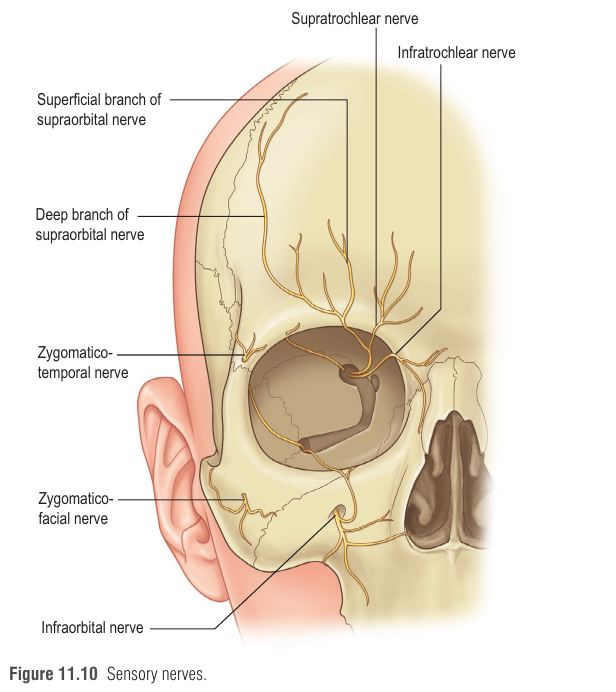
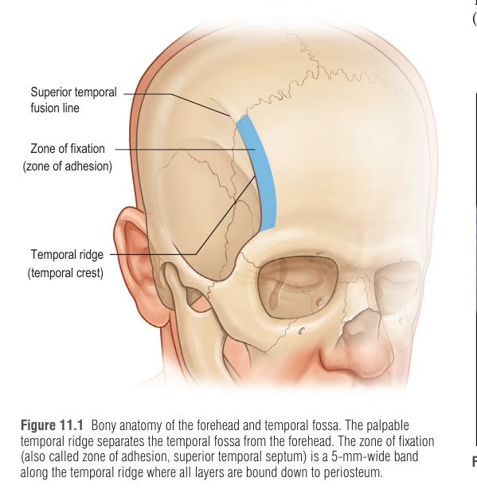
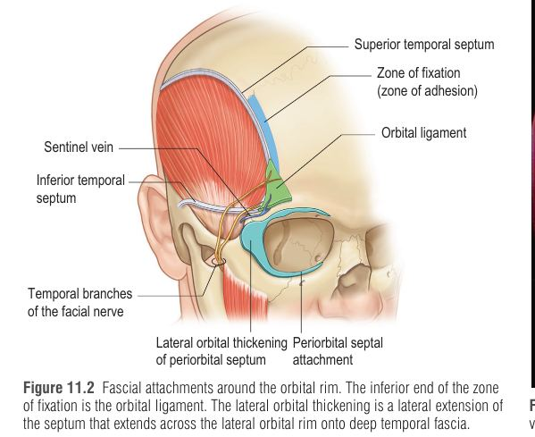
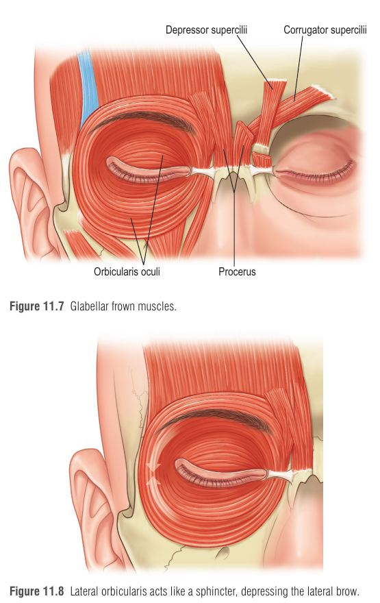
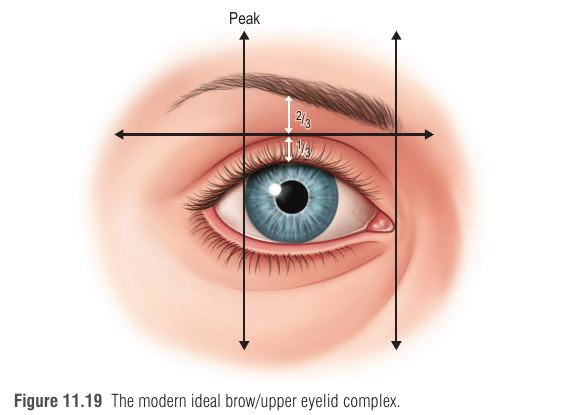
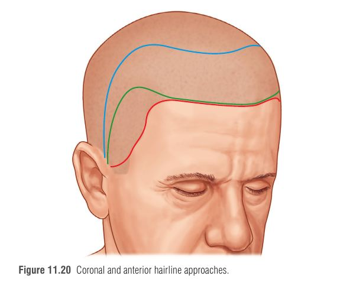
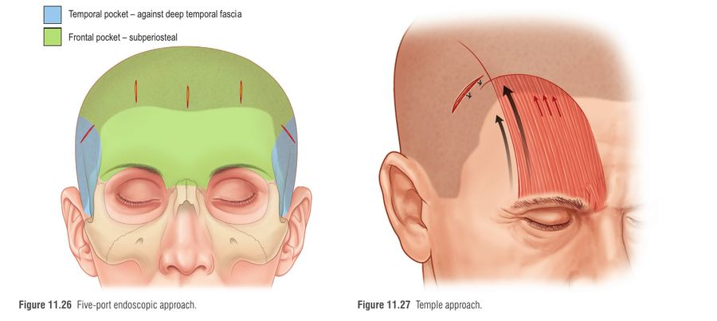
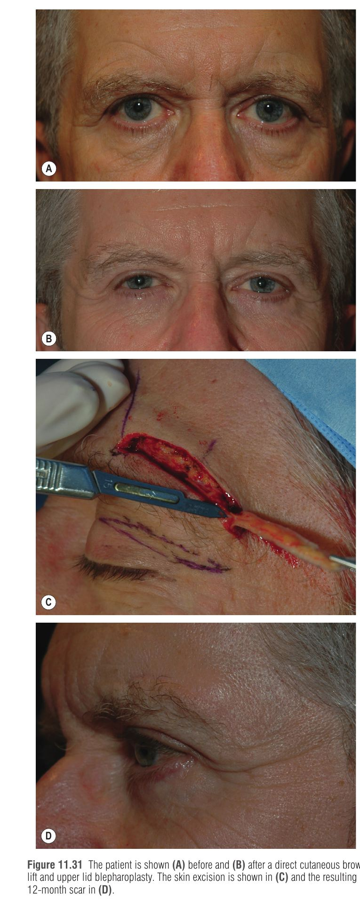
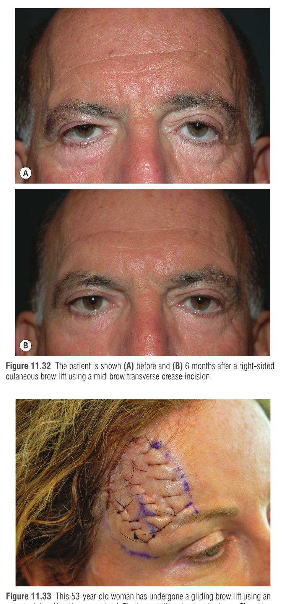

פרק זה עוסק ברקמות שמעל העין: מצח, גבה ויחסיהן לעפעף העליון. זהו פרק אנטומי-אסתטי-ניתוחי: מבינים איזה כוחות מחזיקים את הגבה במקומה, למה היא יורדת (בעיקר בצד הצדדי), ואז בוחרים מתוך סולם שיטות: מבוטוקס ותפרים ועד הרמה קורונלית. הלב של הפרק הוא האבחנה האסתטית הנכונה: מה בדיוק מפריע למטופלת, ולא איזה ניתוח "מרים גבות".

המצח תחום למעלה בקו השיער ולמטה בשפת ארובת העין העליונה (supraorbital ridge). לרוחב עצם המצח עובר רכס מוקף שניתן למישוש: רכס הרקה (temporal crest / superior temporal fusion line), המפריד בין פוסת הרקה (מוצא שריר ה-temporalis) לבין עצם המצח. מבחינה ניתוחית הוא קריטי: מיד מדיאלית לרכס יש רצועה ברוחב כ-5 מ"מ שבה כל השכבות הפאשיאליות קשורות לעצם – "אזור הקיבוע" (zone of fixation). בקצהו התחתון, ליד שפת ארובת העין, הוא מתעבה ל-orbital ligament. בהרמת מצח "בעובי מלא" חובה לשחרר את כל הקשרים האלה מהעצם.
ההמשכיות בין הרקה למצח: ה-deep temporal fascia ממשיכה מדיאלית כפריוסט של עצם המצח, וה-superficial temporal fascia (TPF) ממשיכה כגליאה (galea aponeurotica) העוטפת את ה-frontalis. שמות שונים לאותו אזור (הספרות מבולבלת): superior temporal septum, zone of adhesion, temporal ligamentous adhesion. ה-inferior temporal septum (סיבים לבנים צולבים בין הפאשיה השטחית לעמוקה) הוא סימן דרך באנדוסקופיה: הוא מפריד בין אזור עליון בטוח לבין אזור תחתון שבגגו עוברים ענפי עצב הפנים. שם גם נמצא ה-sentinel vein (הווריד ה-medial zygomaticotemporal vein) ליד שפת הארובה הצדדית; הענף הטמפורלי עובר מיד מעליו.


הגליאה מתפצלת לשכבה שטחית ועמוקה העוטפות את ה-frontalis. בחלקה התחתון, השכבה העמוקה מתפצלת לשלוש: (1) מיד מתחת ל-frontalis (גג galeal fat pad), (2) רצפת כרית השומן, לא דבוקה לעצם, (3) שכבה הדבוקה לפריוסט. שתי העמוקות מגדירות את מרחב ההחלקה (glide plane space): כשה-frontalis מתכווץ, הרקמה הרכה "גולשת" עליו. ה-galeal fat pad ממלא את 2 הס"מ התחתונים של המצח, ומקיף את עצבי ה-supraorbital וה-supratrochlear ושרירי הזעף. מתחת ל-orbital septum יש שומן אורביטלי, ומעליו השומן ה-preseptal (ROOF – retro-orbicularis oculi fat). לרוחב, בחלק מהאנשים אין הפרדה ביניהם – שומן רציף מכרית הגליאה ל-ROOF, ואין חיבור גליאלי לשפת הארובה: גבה צדדית מועדת לצניחה.
מיקום הגבה = (כוחות מעלים) − (כוחות מורידים) − (חיבורי רקמה רכה שמעגנים). המעלה היחיד: ה-frontalis. המורידים: שרירי הזעף, ה-orbicularis והכבידה ("המוריד האוניברסלי").
| שריר | כיוון סיבים | פעולה / קמט | נקודות חשובות |
|---|---|---|---|
| Frontalis | אנכי | מעלה גבה; קמטי מצח רוחביים | המעלה היחיד. חסר לרוחב, ולכן פועל בעיקר על הגבה המדיאלית והמרכזית. הכיווץ חזק בשליש התחתון |
| Corrugator supercilii | רוחבי (הגדול והחזק) | קמטים אנכיים בין הגבות | מוצא בפינה העליונה-מדיאלית של שפת הארובה; עובר דרך galeal fat pad ונעשה שטחי עד לשילוב עם orbicularis ו-frontalis ב"גומה" שנראית בזעף. ענפי supratrochlear עוברים דרכו. עצבוב כפול: temporal + zygomatic |
| Depressor supercilii | אלכסוני | קפלים אלכסוניים החוצים את שפת הארובה | מוריד גבה מדיאלית |
| Procerus | אנכי | קמטים רוחביים ב-radix (שורש האף) | ניתן לחתוך דרך שורש האף |
| Orbicularis oculi | טבעתי (סוגר) | מוריד גבה; "רגלי עורב" לרוחב | מדיאלית ולרוחב הסיבים אנכיים. לרוחב הוא השריר היחיד שמוריד את הגבה |

| עצב | סוג | מה חשוב לדעת |
|---|---|---|
| Supraorbital | תחושתי | יוצא בחריץ (notch) או בנקבה (foramen, כ-20%), 16–42 מ"מ מקו האמצע (ממוצע 25 מ"מ); סימן: חריץ ממשש או קו אמצע האישון. נקבה עד 19 מ"מ מעל השפה, ולכן דיסקציה עיוורת מלמעלה נעצרת לפחות 2 ס"מ מעל שפת הארובה. מתפצל לענף שטחי (מצח מרכזי עד 2 הס"מ הראשונים של השיער) ולענף עמוק (שאר הקרקפת עד הקודקוד). הענף העמוק: כפול-ענף בכ-60%, ועובר ברצועה ברוחב 1 ס"מ, 5–15 מ"מ מדיאלית לרכס הרקה |
| Supratrochlear | תחושתי | יוצא סופרו-מדיאלית, מתפצל ל-4–6 ענפים העוברים דרך ה-corrugator או לפניו |
| Zygomaticotemporal | תחושתי | יוצא מאחורי שפת הארובה הצדדית, מתחת ל-sentinel vein. לרוב נקרע בשחרור מלא; השלכות קלות וזמניות |
| Infratrochlear | תחושתי | גב האף ושפה מדיאלית; כמעט אינו נפגע |
| ענף טמפורלי של עצב הפנים | מוטורי | העצב המוטורי היחיד שמדאיג. 2–4 ענפים דקים על הפריוסט של השליש האמצעי של קשת הזיגומה; 1.5–3.0 ס"מ מעליה נכנסים ל-TPF ומעצבבים frontalis, orbicularis עליון ושרירי זעף. פגיעה: צניחת גבה ואסימטריה |
שלוש נקודות ציון לענף הטמפורלי: (1) השליש האמצעי של קשת הזיגומה; (2) מקביל וצמוד ל-inferior temporal septum; (3) מיד מעל ה-sentinel vein. עקרון הניתוח: להישאר עמוק להם (על ה-deep temporal fascia ברקה, תת-גליאלי או תת-פריאוסטאלי מעל עצם המצח) או שטחי (מעל frontalis/orbicularis/TPF).
(א) צניחת עור/עודף רקמה בעפעף העליון או ptosis סנילי של העפעף ← (ב) כיווץ תת-מודע וכרוני של ה-frontalis כדי לפתוח את שדה הראייה (וגם הרגל: הרמת גבות מול מראה או מצלמה) ← (ג) הגבה המדיאלית והמרכזית עולה (3–4 מ"מ בין גיל 25 ל-50 בחלק מהאנשים), בעוד הגבה הצדדית, שבה פעולת ה-frontalis חלשה, יורדת תחת הכבידה וה-orbicularis הצדדי ← (ד) מראה עצוב, עייף ומבוגר.
גורם נוסף: פתח הארובה גדל עם הגיל (נפח הארובה מתרחב, בעיקר סופרו-מדיאלית ואינפרו-לטרלית; מחקר CT של Kahn & Shaw), מה שתורם לעליית הגבה המדיאלית. הגורם המונע ירידה לרוחב הוא בעיקר חיבור הרקמה הרכה לארובה, שמשתנה בין אנשים ולעיתים חסר. על פי מחקרי מעקב: כשליש מהגבות יציבות, שליש יורדות לרוחב ושליש עולות מדיאלית (כנראה בגלל טונוס frontalis כרוני). חשוב: הנחה ש"המצח כולו צונח" אינה ודאית. לעיתים קרובות רק הצד הצדדי צונח.
סימנים: קמטים רוחביים נובעים מה-frontalis; קמטים אנכיים (glabellar) מה-corrugator; קפלים אלכסוניים מה-depressor supercilii וה-orbicularis המדיאלי; קמטים רוחביים ב-radix מה-procerus. מטופלות רבות מטפלות בעצמן באיפור, תלישת גבות או קעקוע, או פונות לבלפרופלסטיה בלי לדעת שהגורם העיקרי הוא גבה צדדית צונחת.
האקסיומה הישנה "הגבה בגובה שפת הארובה או מעליה" פשטנית. צורת הגבה חשובה יותר מגובהה המוחלט (שינוי צורה משנה את הרגש הנתפס). ה"אידיאל" משתנה בין תקופות (רנסנס מול שנות ה-50), מגדר ואתניות (בפנים אסיאתיות גבות גבוהות יפות יותר).

| כלי | מה בודקים | פרשנות |
|---|---|---|
| אליפסת Gunter (גבה למעלה, קפל נזוגוגולרי למטה) | האישון צריך להיות על ה"משווה" של האליפסה | אליפסה רחבה אנכית נראית מבוגרת; צרה נראית צעירה. אישון מעל המשווה = גבה נמוכה (± קפל נזוגוגולרי נמוך) |
| הצגת הטרסוס (tarsal show) | 25%–35% מהמרחק בין ריסי העפעף לשפה התחתונה של הגבה, בגבול הצדדי של הקשתית | משתנה בגלל: גובה הגבה, ptosis או retraction של העפעף, עודף רקמה עליונה, אובדן שומן ב-upper sulcus |
בודקים בישיבה/עמידה, ראש אנכי: חדות ראייה, סימטריה, קו שיער קדמי, צפיפות שיער, קמטי מצח וזעף, עובי שיער הגבה, גובה, ציר (נטיית הזנב) וצורה (שטוחה/מחודדת), ניידות פעילה ופסיבית, צלקות/קעקועים; בעפעף העליון: עודף רקמה, חלולות ושיפוע העפעף. בודקים בעיניים פקוחות וסגורות: בעיניים עצומות ה-frontalis בדרך כלל נרגע וחושף את מיקום הגבה האמיתי. אם מחזיקים את הגבה במצב הזה ופותחים עיניים, רואים את יחס גבה-עפעף בלי השפעת frontalis; אפשר להעביר את הגבה ידנית ולנסות וקטורים שונים. המטרה: לזהות את המרכיב הדומיננטי של ההזדקנות (תמונות ישנות עוזרות).
אם הבעיה היא קמטי מצח בלבד, בוטוקס הוא בחירה ראשונה מצוינת (והחליף את העניין בניתוחי גבה אצל רבים). אינדיקציה לניתוח: פונקציונלית (חסימת ראייה) או, לרוב, אסתטית. נלווים שכיחים: מתיחת פנים ובלפרופלסטיה. אפשר להרים את כל הגבה, חלק ממנה, או רק את המדיאלית (גבות "כועסות"), אך הנפוץ ביותר: שליש עד חצי צדדי, ללא הרמה מדיאלית כמעט. אצל מי שעוברת בלפרופלסטיה לעודף עור, מטרה לגיטימית של ניתוח הגבה היא לא להרים אלא לשמר את המיקום כשה-frontalis נרגע.
הפרק מדגיש: פעם נהגו "מידה אחת לכולם", והיום מתאימים לפי האנטומיה והאבחנה. שני עקרונות בסיס לכל הרמה: שחרור יסודי של חיבורי הרקמה (כשל מוקדם = חוסר שחרור) וקיבוע (כשל מאוחר = כשל בקיבוע).
| גישה | עיקרי הטכניקה | יתרונות | חסרונות |
|---|---|---|---|
| קורונלית פתוחה (ה"גולד סטנדרט" ההיסטורי) | חתך בקרקפת, קלאסית 6–8 ס"מ מאחורי קו השיער, עד פריוסט; דיסקציה תת-גליאלית (שכיח) או תת-פריאוסטאלית; חשיפת שרירי הזעף דרך galeal fat pad (הסרה/החלשה); שחרור מלא של שפת הארובה ושל zone of fixation; שמירה על supraorbital; משיכת הדש סופרו-לטרלית וכריתת רצועת קרקפת (1–3 ס"מ לרוחב, מעט או כלום במרכז); קיבוע על ידי כריתה ותפרי גליאה | חשיפה מעולה, שליטה בשרירי הזעף, תוצאה יציבה ועמידה. חתך בקודקוד = קו פרשת מים בין עצבים קדמיים לאחוריים, פחות נימול | נימול קרקפת (חלקו קבוע), צלקת ארוכה, פגיעה בזקיקי שיער, דיסאסתזיה, העלאת קו שיער. זהירות/הימנעות בקו שיער גבוה, שיער דליל, גברים עם נטייה לקרחת |
| קו שיער קדמי (anterior hairline) | חתך לאורך קו השיער הקדמי (פרוס/גל; משופע במקביל לזקיקים או חוצה אותם); דיסקציה בשלושה מישורים: תת-פריאוסטאלי, תת-גליאלי או תת-עורי | חשיפה כמו קורונלית בלי הזזת קו השיער; המישור התת-עורי מרים בלי לחתוך עצבים תחושתיים ויכול למחוק קמטי מצח; מתאים גם להנמכת קו שיער (קיבוע בעצם) או להנמכת גבות גבוהות מדי (קיבוע בשפת הארובה); וריאנט בחתך widow's peak קצר לגבה הצדדית | צלקת קבועה בקו השיער; נימול קרקפת גרוע יותר מבקורונלית אם החתך בעובי מלא (עצבים נחתכים קרוב למקורם); דיסקציית עור מלאה עלולה לפגוע באספקת הדם ולגרום לנמק עורי חלקי |
| אנדוסקופית | 3–5 חתכים של 1–2 ס"מ בקרקפת שעירה; מדיאלית ל-zone of fixation: תת-גליאלי או (יותר פופולרי) תת-פריאוסטאלי; לרוחב: על ה-deep temporal fascia, כשה-inferior temporal septum וה-sentinel vein מכוונים את מיקום הענף הטמפורלי; חיבור כיסי הדיסקציה; שחרור שפות הארובה (מעבר לקנטוס הצדדי); עצב supraorbital נראה בשחרור; הסרה/קריעה של שרירי הזעף (עצבי supratrochlear נראים דרך ה-corrugator); קיבוע: תפרים בכיס הצדדי מהפאשיה השטחית לעמוקה וקיבוע לעצם בכיס המדיאלי. מדיאלית ההרמה פסיבית: מסירים את המורידים וה-frontalis מרים ללא התנגדות | חשיפה מוגדלת, חתכים קצרים ובלתי נראים, נימול קרקפת נמנע ברובו | דרישות טכניות של ציוד, סכנה להרמה יתר או הפרדת הגבות מדיאלית, אי-ודאות לגבי יציבות הקיבוע |
| רקה (temple lift) | חתך בעובי מלא ברקה, לרוחב לרכס; דיסקציה ישירות על deep temporal fascia; שחרור שפת הארובה הצדדית, שפת supraorbital וה-zone of fixation (עם/בלי אנדוסקופ); קיבוע בתפרים בין הפאשיה השטחית לעמוקה; לשרירי זעף אפשר גישה טרנספלפברלית | מכוון לגבה הצדדית | ראות מוגבלת של שפת supraorbital המדיאלית והמרכזית; וקטור אלכסוני לגבה הצדדית |
| גבה צדדית / modified lateral brow lift (Warren) | חתך מדיאלי יותר מגישת הרקה; הווקטור היעיל ביותר לשליש-חצי הצדדי הוא לאורך temporal crest. חתך 5–6 ס"מ כ-1 ס"מ מאחורי קו השיער; כריתת עור בעובי מלא (כמו קורונלית) אך ענפי העצב נשמרים כצרור נוירווסקולרי (nerve sparing); קיבוע בתפרי deep temporal fascia ותפירת הגליאה ללא מתח עור; קיבוע לעצם מדיאלית לצרור | יתרונות האנדוסקופית + חוזק קיבוע של קורונלית; מכוון לחלק הצונח ביותר או ל-congenital downturned brow | חתך ארוך יותר ברקה לעומת אנדוסקופית טהורה |
| עוריות (cutaneous) | Suprabrow / direct brow lift: כריתת עור סמוך לגבה, יחס כריתה:הרמה כ-1:1, כנראה ההרמה המדויקת ביותר. Mid-brow: חתך בקמט מצח רוחבי. תת-עורי מקו שיער: יחס עד 3:1–4:1 (יותר הישנות). Gliding brow lift: דיסקציה תת-עורית והזזת העור עם תפרים חיצוניים זמניים, בלי כריתה (net sutures מוסרים אחרי 3 ימים) | קל יחסית ללמידה, נסבל היטב, בלי נימול קרקפת, בלי סיכון מוטורי, קל לחזרה. מתאים במיוחד לגברים עם קמטי מצח עמוקים וגבות עבות (מסתירים חתך) | צלקת נראית; ההישנות עם הזמן (כוחות מורידים מותחים שוב את העור). ככל שהחתך קרוב לגבה, התוצאה צפויה יותר |
| טרנספלפברלית – החלשת שרירים | דרך חתך בלפרופלסטיה עליונה: חותכים orbicularis, מנתחים בין orbicularis ל-orbital septum; ה-depressor supercilii על ה-corrugator הכהה והשביר; מסירים corrugator לרוחב לענף supratrochlear; ניתן להוסיף השתלת שומן קטנה; ה-procerus נחתך דרך שורש האף | חתך נסתר; מצוין להחלשת קמטי זעף בלי הרמת מצח; או כתוספת להרמת שליש צדדי | סכנה לעצבים תחושתיים (supraorbital, supratrochlear), יותר שטפי דם ובצקת מבלפרופלסטיה בלבד |
| Browpexy טרנספלפברלי | דרך אותו חתך עפעף: חשיפת שפת הארובה הצדדית, דיסקציה 2–4 ס"מ מעל השפה (או לפחות 1 ס"מ מעל נקודת הקיבוע); כמה תפרים מקבעים את ה-orbicularis לפריוסט; גרסה מתונה: תפירת קצה ה-orbicularis לשפה ללא דיסקציה (כ"ערסל" ל-ROOF) | קל, צלקת נסתרת | אפקט מוגבל, אורך חיים מוטל בספק; לא להדק יתר (סכנת "גומה" בתפר בגבה) |
| Suture suspension | תפרים מחוספסים או לולאות דרך מנהרות תת-עוריות, ללא דיסקציה | פשטות ובטיחות יחסית | היקף ואורך אפקט מוטלים בספק |
בגישה מדיאלית ה-frontalis מרים בחופשיות אחרי הסרת המורידים, ובגישה לרוחב צריך שחרור מלא של כל חיבורי הגליאה ומנגנון קיבוע (לא כריתת קרקפת). להרמת גבה חלקית מגדירים וקטור לפי תכנון קדם-ניתוחי; הרמה מדיאלית יתר = מראה מופתע/הפרדת גבות.


ניתוחים קלים: הרמת ראש, קרח, משחה, משככי כאב. נרחבים (קורונלית, אנדוסקופית): חבישה ואולי נקז ל-24 שעות. חסם bupivacaine של supraorbital ו-supratrochlear מפחית כאב ראש. מקלחת אחרי 48 שעות, הסרת תפרי קרקפת ב-7–10 ימים. מניעת הישנות של צניחת גבה צדדית: בוטוקס ב-orbicularis הצדדי, משקפי שמש והימנעות משמש (מניעת squinting) בחודש הראשון.
הבעיה הלא פתורה: חוסר יכולת לחזות. בלפרופלסטיה מדויקת למילימטר, הרמת גבה לא; הישנות מסוימת בלתי נמנעת בכל הטכניקות. הרמה קלה = תוצאה קלה, אך לעיתים מתאימה למטופלת עם ציפיות מתאימות. לעיתים הפתרון הוא שילוב (בלפרופלסטיה, השתלת שומן ב-upper sulcus, תיקון ptosis).
| סיבוך / בעיה | פרטים | טיפול |
|---|---|---|
| Scar alopecia | נגרמת מפגיעה בזקיקים על ידי חתך, אלקטרוקואגולציה או מתח; יכולה להיות זמנית | קבועה: כריתת צלקת או השתלת שיער |
| המטומה | לא שכיחה | קטנה: חולפת; משמעותית: ניקוז ניתוחי |
| זיהום | נדיר, פחות מ-1% | טיפול בפצע ואנטיביוטיקה מתאימה |
| עיוותי קונטור | באזורי כריתת שריר (גלבלה) | מניעה: חומר מילוי תוך-ניתוחי (שומן או פאשיית רקה); אם מאוחר – תוספת ברורה בניתוח נפרד |
| נזק לעצב תחושתי | שכיח, אוניברסלי בחלק מהשיטות. קורונלית: כל העצבים האחוריים נחתכים, נימול עמוק עד הקודקוד, משתפר לאט (לעיתים שנים). אנדוסקופית/לטרלית: פחות. החלשת שרירי זעף: נוירפרקסיה זמנית, חזרת תחושה ב-2–3 שבועות. נוירפרקסיה של supraorbital נפוצה אחרי שחרור עמוק של שפת הארובה | ציפייה לחזרה עם הזמן |
| נזק לענף הטמפורלי | הסיבוך המקומי המדאיג ביותר; נוירפרקסיה זמנית די שכיחה, פגיעה קבועה נדירה | המתנה ומעקב; אם אין שיפור: בוטוקס ל-frontalis בצד התקין, או הרמה חוזרת בצד הפגוע |
ניתוחי תיקון: הסיבה הנפוצה ביותר היא עיוות אסתטי, בעיקר הישנות. לעיתים מספיקה בלפרופלסטיה שמרנית; אם האובדן משמעותי – הרמה חוזרת, רצוי בטכניקה אחרת, במישור דיסקציה שונה ובשיטת קיבוע שונה. הרמה אגרסיבית יתר גורמת בדרך כלל להרמה יתר של הגבה המדיאלית: קלה – בוטוקס ב-frontalis המרכזי; בולטת – הנמכה ניתוחית (שחרור מלא של הקרקפת מהגולגולת, הנמכה וקיבוע לשפת הארובה); ההיפוך קשה בדרך כלל מההרמה המקורית. גבה מדיאלית מורמת היטב אך צדדית לא מורמת (מראה עצוב לרוחב): הרמת גבה צדדית מבודדת. בנוסף, האפקט דועך עם הזמן וייתכן צורך בניתוח חוזר.


הרמת גבה ראשונה: Passot (1919), כריתות עור קטנות. 1926 Hunt (חתך קו שיער קדמי), 1931 Lexer, 1962 Gonzalez-Ulloa (קורונלית עם מתיחת פנים), 1965/1976 Vinas (חשיבות הגבה הצדדית), 1984 Papillon (תת-עורי מקו שיער), 1989 Paul (טרנספלפברלי). האנדוסקופית: Isse ו-Vasconez (1992); פרסום ראשון Chajchir (1993); Knize (1999) "limited incision forehead lift". עד 2003 ירידה בשימוש בגלל ספק ביציבות; אחר כך שיטות לטיפול בהישנות לרוחב; בשנות ה-2010 חזרה של עניין בשיטות עוריות.
G – Gravity (הכבידה, המוריד האוניברסלי)
P – Procerus (אנכי, קמטים ב-radix)
O – Orbicularis (סוגר; השריר היחיד שמוריד את הגבה לרוחב)
C – Corrugator (רוחבי, החזק; קמטים אנכיים)
D – Depressor supercilii (אלכסוני)
ומולם: F – Frontalis, המעלה היחיד. (מנמוניק מקורי; הרשימה מהפרק.)
דמייני נדנדה: בצד אחד ילד קטן בודד (ה-frontalis) שמנסה להרים את הגבה; בצד השני חמישה ילדים כבדים יושבים בשורה: גרביטציה, procerus, orbicularis, corrugator ו-depressor. הנדנדה נוטה למטה, במיוחד בצד הצדדי שבו הילד הבודד כמעט לא מגיע. הרמת גבה = או להוריד ילדים (החלשת שרירי זעף), או לקבע את הנדנדה בבורג (שחרור + קיבוע).
אישה בת 58 פונה בבקשה לבלפרופלסטיה עליונה כי "העפעפיים כבדים ואני נראית עצובה". בבדיקה: זנב גבה צדדי נמוך משמעותית, הגבה המדיאלית גבוהה יחסית, קמטי מצח רוחביים עמוקים, עודף עור בעפעף העליון הצדדי. כשהיא עוצמת עיניים ומרפה, הגבות יורדות בבירור. היא חוששת מצלקת בקרקפת ומנימול, ורוצה להימנע מניתוח נרחב.